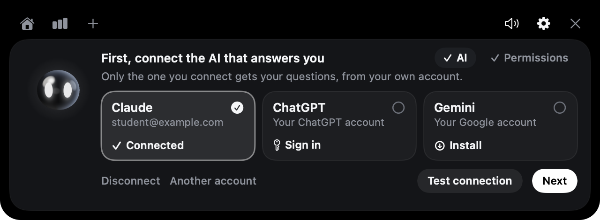
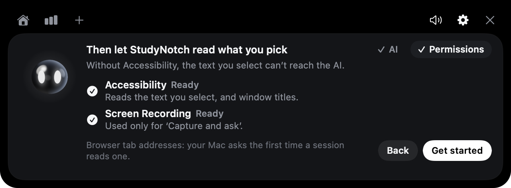
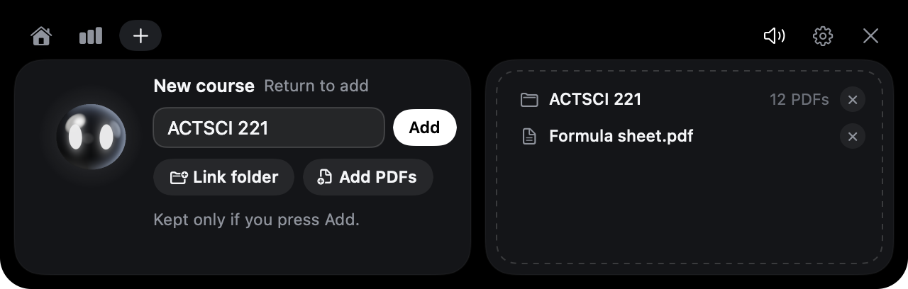
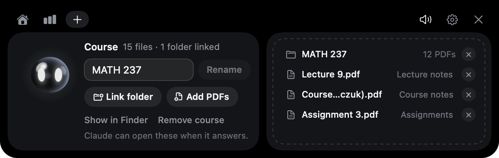
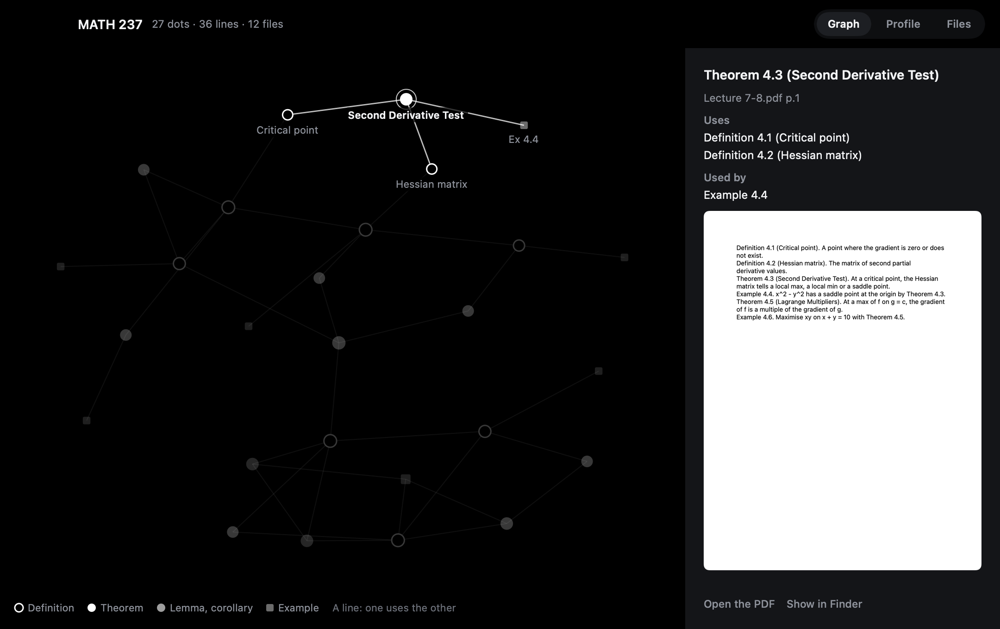
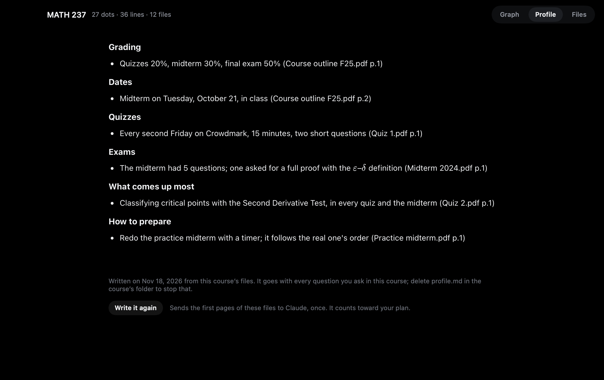

Get started
From building it from source to your first session.
What you need
- A Mac running macOS 13 or later. It doesn’t need a notch: on a screen without one, a small bar in the middle of the menu bar plays the notch’s part.
- Xcode or the Xcode command line tools, with Swift 5.9 or later.
- An account with Claude, ChatGPT or Google, for answers. The first step of the app connects it (Connect an AI). Without any AI, the timer and drift cards still work.
Build and launch
Run these from the project folder, one after the other.
./scripts/build.shopen build/StudyNotch.appIf your Mac has a signing certificate, the build is signed with it, so the permissions you granted survive a rebuild. Without one it gets a temporary signature, and you have to grant the permissions again after every rebuild.
First launch
A card drops down from the top centre of the screen and walks you through two steps. Step 1 is connecting the AI that answers: click Claude, ChatGPT or Gemini, and the tile asks before connecting it, signs you in, or installs or downloads what is missing (how each tile works).

Step 2 is the Mac’s permissions. You can skip either step; here is what won’t work if you do.

| Item | Used for | Without it |
|---|---|---|
| AI connection | Answering questions | No answers. The timer and drift cards still work. |
| Accessibility | Reading selected text and window titles | The right-click button still appears, but it can’t read what you selected. You can still type a question or ask with a screenshot. |
| Screen Recording | “Capture and ask” | Captures come out blank. You can still take a regular Mac screenshot and ask about it. |
Your Mac asks separately the first time it reads a browser tab’s address during a session.
Your first session
- Point at the notch, or click the highlighter icon in the menu bar.
- Click a course. “General” runs the timer only, with no material.
- Select some text anywhere and right-click. “Ask” is at the top of the menu.
- In the window that opens, pick a button and press “Send”.
Adding a course and its material
Open the “+” tab. Type the course’s name, and give it its material before you press “Add”:
- Link folder links a folder you already keep, say
Documents/MATH 237. Its PDFs are read where they are; nothing is copied, and the folder is never changed. - Add PDFs copies single PDFs into the course’s own folder.
- Or drag PDFs or a folder onto the island. A dropped folder offers its name for the course.

What you picked only waits in the list. “Add” makes the course with it; close the tab without pressing “Add” and nothing is kept, and no course is made.
Changing a course later
On the Home tab, pick the course and press “Edit” on its card. There you can link another folder or unlink one (✕; the folder itself stays), add PDFs, take a copied PDF out (✕; it goes to the Trash), rename the course, or remove it. “Remove course” asks first, moves the course’s own folder to the Trash and leaves linked folders where they are.

StudyNotch sorts a course’s files by itself into course outline, lecture notes, course notes, assignments, quizzes, exams, exam prep and other. It goes by the file’s name (“Quiz 3”, “Practice midterm”, “A2”), then the name of the folder it is in, then the title at the top of its first page. A copied PDF moves into a folder of that name inside the course’s materials folder. A file in a linked folder stays where it is and is only grouped, because linked folders are never written to. If a copied PDF is sorted wrong, click its kind in the list and pick another.
How a course connects
The graph icon on a course’s card (beside End during a session) opens the course’s window. On its Graph tab, every numbered or named definition, theorem, lemma, proposition, corollary and example in the course’s notes is a dot. A line joins two when one names the other, like “by Theorem 2.3”, or uses the term a definition defines. Definitions are rings, theorems white dots, lemmas and corollaries grey dots, examples small squares. Point at a dot to light up its neighbours; click it to see what it uses, what uses it, and its page. Drag to move around and pinch to zoom. The Files tab lists the course’s files by kind.

The graph is read from the PDFs on your Mac, with no AI, so it shows only what the notes write: headings like “Theorem 2.3.” or “Definition (Limit)”, and the references between them. Notes without numbered headings give few dots.
How the course is taught and tested
The window’s Profile tab writes down how this course works, from its own files: grading, dates, what the quizzes and exams look like, what comes up most, the professor’s notation, and how to prepare. Press “Write the profile” and the AI you connected reads the first pages of the course outline, quizzes, exams, exam prep and assignments, once, and cites the file and page for each fact. It counts toward your plan. The profile is kept as profile.md in the course’s folder and goes with every question you ask in the course, so an answer can say how a topic is tested. “Write it again” after you add a new quiz or exam.

A course works like a project in the Claude app: every question asked in it shares the same things. The AI gets the course’s notes, the names of its files by kind, and the course’s memory, a line for each earlier question (the day, the question, the picked text and the page the answer came from). The memory is memory.md in the course’s folder; delete a line to have it forgotten. With Claude, the questions also gather under the course’s name in the Claude app.
A PDF dragged onto the notch during a session goes straight into that session’s course. The first time StudyNotch reads a linked folder in Documents, Desktop or Downloads, your Mac may ask you to allow it.